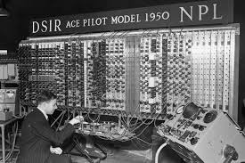

Logros de Alan Turing
- Desarrollo de la Máquina de Turing (1936): Creó un modelo teórico de computación que sentó las bases para las computadoras modernas.
- Trabajo en descifrado de Enigma (Segunda Guerra Mundial): Diseñó métodos para romper los códigos nazis, ayudando a acortar la guerra y salvar millones de vidas.
- Creación del Colossus: Participó en el desarrollo de una de las primeras computadoras electrónicas para el descifrado de códigos.
- La Prueba de Turing (1950): Propuso un criterio para determinar si una máquina puede exhibir inteligencia similar a la humana.
- Desarrollo temprano de la Inteligencia Artificial: Planteó ideas sobre la posibilidad de que las máquinas pudieran aprender y razonar.
- Aportes a la Biología Matemática: Investigó patrones en la naturaleza, desarrollando teorías sobre la morfogénesis en los seres vivos.
- Trabajo en el diseño de computadoras modernas: Ayudó a desarrollar la ACE (Automatic Computing Engine), una de las primeras computadoras programables.
- Influencia en la criptografía moderna: Sus estudios en cifrado y seguridad inspiraron el desarrollo de la criptografía computacional.
- Doctorado en la Universidad de Princeton (1938): Obtuvo su doctorado en lógica matemática en una de las universidades más prestigiosas del mundo.
- Desarrollo del Test de Imitación: Variación de la Prueba de Turing que explora la inteligencia artificial.
- Pionero en la idea de la autoprogramación: Propuso que las computadoras pudieran modificar su propio código para aprender.
- Investigaciones en cibernética: Estudió cómo los sistemas de control y comunicación se aplican en máquinas y organismos vivos.
- Publicación de "Computing Machinery and Intelligence" (1950): Un artículo fundamental para la inteligencia artificial.
- Conceptos de computación cuántica: Aunque no la desarrolló, sus ideas influyeron en su evolución.
- Aplicaciones en seguridad informática: Sus ideas sobre criptografía siguen influyendo en la ciberseguridad.
- Medalla de la Orden del Imperio Británico (1945): Fue reconocido por su contribución al esfuerzo de guerra.
- Inspiración en la cultura popular: Su vida ha sido retratada en libros y películas, como "The Imitation Game" (2014).

 ALAN TURNING
ALAN TURNING